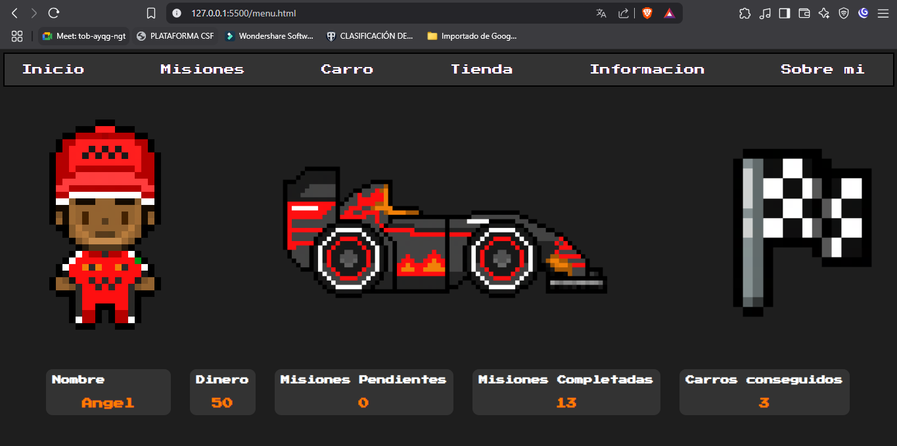
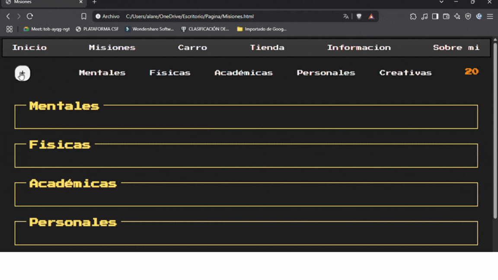
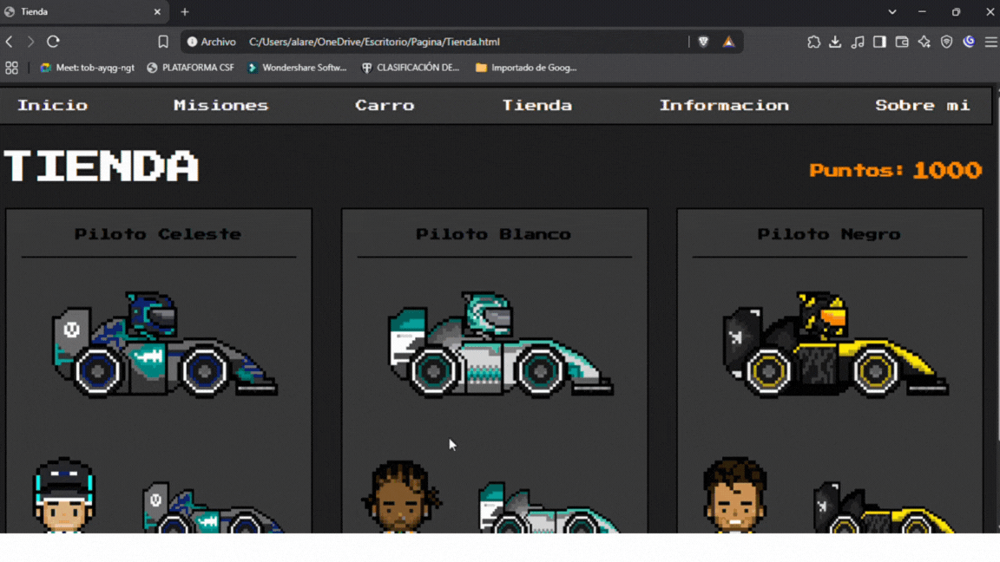

Garage of Wins
Garage of Wins es una página web diseñada para recompensar tu disciplina al completar tareas. Cada objetivo cumplido podras ganar puntos con los cuales podras comprar diferentes carros con distintos diseños.
Menu
En el apartado de menú se muestra el vehículo seleccionado por el usuario, al igual que sus estadísticas, como monedas, tareas completadas, tareas pendientes, etc.


Misiones
En el apartado de misiones podrás agregar tareas con diferentes categorías, podrás eliminarlas y completarlas. Al completar tareas, ganarás 10 puntos.
Carro
En el apartado de carro se muestran los vehículos que el usuario ha obtenido, y se le permite equiparlos.


Tienda
En el apartado de tienda podrás comprar diversos estilos de carros, los cuales después podrás equipar en el apartado de carro.